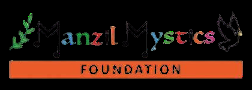
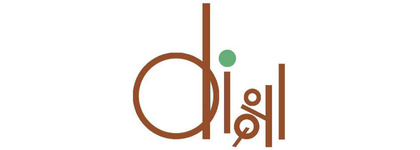
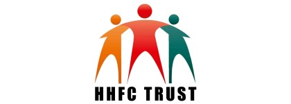
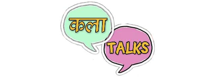

01
Children & creative learning
Every child deserves a way into creativity. Music, art and performance used to build learning, confidence, communication, teamwork and imagination.
Every person should get the chance to find their talent, build a skill, say something of their own, and then find somewhere to take it. We want art, music, culture and creative skill treated as real tools for education, confidence, inclusion, community and a living.
Talent from the soil of a community, all the way to a stage worth standing on. मिट्टी से मंच तक.
Gramotsav Foundation has already worked with nearly 2,000 children through its various artistic, cultural, educational and community-based initiatives.
A head count only tells you who turned up. What we are actually trying to move a young person through is this.
| Discover | Finding talent and creative potential. |
| Learn | Accessible chances to build a skill. |
| Create | Imagination, experiment, saying your own thing. |
| Perform | Showing that skill to a real audience. |
| Connect | Relationships with artists, communities, institutions. |
| Grow | Confidence, leadership, identity. |
| Opportunity | Routes into further study, performance, work, enterprise. |
Every child deserves a way into creativity. Music, art and performance used to build learning, confidence, communication, teamwork and imagination.
Art can make a room where difference becomes a strength. We build accessible creative work for children and communities that conventional learning does not reach.
India has enormous artistic talent well outside the big cultural institutions and the metros. We look for it, and connect it to mentors, platforms and audiences.
Our fellowships put young people to work with communities: learning, leading, contributing. Ten of the twelve fellows on our most recent project were women.
An artist is also a teacher, a mentor, a facilitator, a community builder. We create work for artists in teaching, mentoring, performance and cultural programming.
Talent is everywhere. Opportunity is not.
Nobody has to be born comfortable to be extraordinary. Usually what is missing is not the talent. It is access, a mentor, a platform, a chance.




We want long partnerships with people who want the impact to be real and measurable. Six things a partner can bring, and money is one of them.
A safe, reachable place where children can learn and make things.
Instruments, art materials, technology, learning material.
Trainers, artists, facilitators, fellows and mentors.
Structured creative learning and community work.
Performances, showcases, fellowships, livelihood routes.
Taking what works to more communities and institutions.
We are young, registered and ready to start. There is room for a partner on the Blind School Project, for someone to sponsor a cohort of learners, or for a saathi who can give us a morning a week.